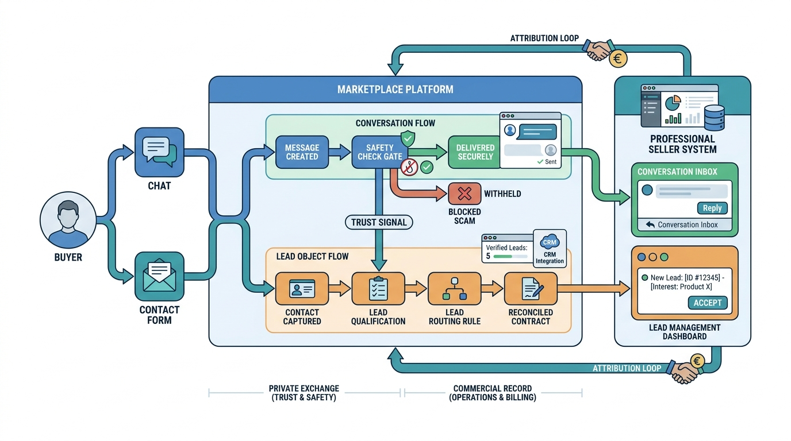

Part VI — MONEY: Conversion and Monetization
From Interest to Contact: Messaging and Lead Management

Image generated by Google Gemini (gemini-3-pro-image-preview)
Part VI — MONEY: Conversion and Monetization

Image generated by Google Gemini (gemini-3-pro-image-preview)